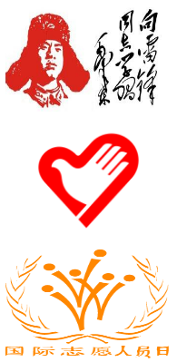

欢迎来到志愿文化！ 快速导航：返回首页
- 志愿者精神：
是一种自愿的、不为报酬和收入而参与推动人类发展，促进社会进步和完善社区进步的精神，是公民参与社会活动的重要方式，是公民社会和公民社会组织的精髓。奉献、友爱、互助、进步八个字很好地总结和概括了志愿精神。
- 青年志愿者标志含义：
“中国青年志愿者“标志的整体构图为心的造型，同时也是英文“青年”的第一个字母Y；图案中央既是手，也是鸽子的造型。标志寓意为中国青年志愿者向社会上所有需要帮助的人们奉献一片爱心，伸出友爱之手，以跨世纪的精神风貌，面向世界，走向未来，表现青年志愿者“热情献社会；真情暖人心”的主题。
- 国际志愿者日：
1985年12月17日，第四十届联合国大会通过决议，从1986年起，每年的12月5日为“国际促进经济和社会发展志愿人员日”（International Volunteer Day for Social and Economic Development 简称：国际志愿人员日）。其目的是敦促各国政府通过庆祝活动唤起更多的人以志愿者的身份从事社会发展和经济建设事业。
- 志愿杭州宣传视频：
